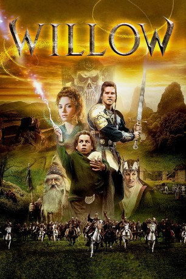

#6189 Willow
Auszeichnungen: für 2 Oscars nominiert
 
 IMDB-Wertung: 7.3 / 10
IMDB-Wertung: 7.3 / 10  Tomatometer: 50
Tomatometer: 50  Metascore: 0
Metascore: 0 
Während das Land von der bösen Königin und Magierin Bavmorda regiert wird, spricht die Prophezeiung von einem Kind, daß die Rettung bringen kann. Als dieses geboren wird und getötet werden soll, setzt es die Amme in einem Körbchen auf dem Fluß aus, den es hinuntertreibt, bis die Familie des kleinwüchsigen Willow Upgood es findet. Der Rat der Kleinwüchsigen erwählt ihn, das Kind zu den Menschen zurückzubringen, doch auf dem Weg gerät er an den Krieger Madmartigan und ahnt bald, daß er in einem Gefecht zwischen Gut und Böse steckt...
Jahr: 1988
Dauer: 125 Minuten
FSK: 12
Land: USA Studio: MGMTonspuren: DTS - ,
Untertitel: Deutsch,
Auflösung: 1080p (1920x800) Größe: 11571 MB
Genre: Action, Drama, Abenteuer, Fantasy, Liebe
Regisseur:  Ron Howard
Ron Howard
Drehbuch: Alejandro Amenábar
Soundtrack:
Darsteller:
 Val Kilmer als Madmartigan
Val Kilmer als Madmartigan Joanne Whalley als Sorsha
Joanne Whalley als Sorsha Warwick Davis als Willow Ufgood
Warwick Davis als Willow Ufgood Jean Marsh als Queen Bavmorda
Jean Marsh als Queen Bavmorda Billy Barty als High Aldwin
Billy Barty als High Aldwin Pat Roach als Gen. Kael
Pat Roach als Gen. Kael Gavan O'Herlihy als Airk Thaughbaer
Gavan O'Herlihy als Airk Thaughbaer- David Steinberg als Meegosh
- Phil Fondacaro als Vohnkar
 Tony Cox als Vohnkar Warrior
Tony Cox als Vohnkar Warrior- Mark Northover als Burglekutt
 Kevin Pollak als Rool
Kevin Pollak als Rool Rick Overton als Franjean
Rick Overton als Franjean- Maria Holvoe als Cherlindrea
 Kenny Baker als Nelwyn Band Member , uncredited
Kenny Baker als Nelwyn Band Member , uncredited- Gerry Crampton als Nockmaar Lieutenant , uncredited
- Samantha Davis als Nelwyn Villager , uncredited
 Malcolm Dixon als Nelwyn Band Member , uncredited
Malcolm Dixon als Nelwyn Band Member , uncredited- Owain Griffiths als Villager , uncredited
 Cheryl Howard als Nelwyn Villager , uncredited
Cheryl Howard als Nelwyn Villager , uncredited- Greg Powell als Nockmaar Lieutenant , uncredited
 Jack Purvis als Nelwyn Band Member , uncredited
Jack Purvis als Nelwyn Band Member , uncredited- Patricia Hayes als Fin Raziel
- Robert Gillibrand als Vohnkar Warrior
- Julie Peters als Kiaya Ufgood
- Mark Vande Brake als Ranon Ufgood
- Dawn Downing als Mims Ufgood
- Michael Cotterill als Druid
- Zulema Dene als Ethna
- Joanna Dickens als Barmaid
- Jennifer Guy als The Wench
- Ron Tarr als Llug
- Sallyanne Law als Mother
- Ruth Greenfield als Elora Danan
- Kate Greenfield als Elora Danan
- Edwin Alofs als Villager , uncredited
- Michael Henbury Ballan als Nelwyn Villager , uncredited
- Peter Burroughs als Nelwyn Villager , uncredited
- Kenneth Coombs als Nobleman , uncredited
- Sadie Corre als Nelwyn Villager , uncredited
- Kim Davis als Nelwyn Villager , uncredited
- Margarita Fernández als Nelwyn Villager , uncredited
- Valerie Gale als Nelwyn Villager , uncredited
- Rusty Goffe als Nelwyn Villager , uncredited
- Raymond Griffiths als Nelwyn Villager , uncredited
- Stéphanie Lhorset als Nelwyn Villager , uncredited
- Nosher Powell als Nelwyn Villager , uncredited
- Craig Salisbury als Nelwyn Jester , uncredited
- David Sibley als Galladoorn Warrior , uncredited
Datei: X:\1988\Willow (1988, FSK12, 1920x800).mkv seit 11.05.2017
Festplatte: HD 1987-1991
 Es gibt insgesamt 66 Filme in der Gruppe '1988'
Es gibt insgesamt 66 Filme in der Gruppe '1988'